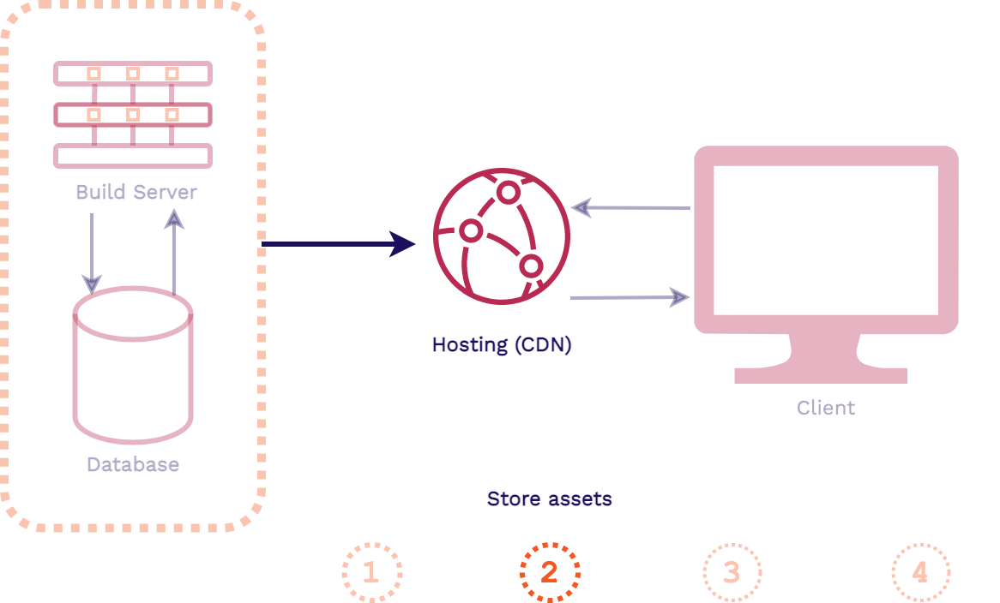

Case Study
1. What is Stagehand?
Stagehand is a drop-in solution that provides review apps for modern frontend applications. We are a framework that automatically manages review apps for your application’s GitHub repository on your own cloud infrastructure. We use AWS, GitHub Actions, and some Stagehand client-side code to set-up, deploy, manage, and teardown review apps for your frontend application.
All you have to do is install the Stagehand CLI via our NPM package and run our init command from your local repo. We will handle the rest. Then you will have review apps automatically deployed for you to view and share whenever you open a pull request on your GitHub repository.
In this case study, we describe what review apps are as well as their value for modern frontend applications. We then look over existing solutions for review apps and where Stagehand fits into the mix. Then we will look at how we built Stagehand as well as challenges we faced along the way. Finally, we will go over some future work we would like to develop.
2. What are review apps?
Stagehand automates the deployment and management of review apps for modern frontend applications. To understand why we built Stagehand, we need to understand what review apps are. In this section we will dive into review apps and the value they bring to frontend developers as well as what we mean when we say that Stagehand is for “modern frontend applications”.
2.1. Staging Environments
To see where review apps fit into the overall continuous development of a production application, let’s consider the various environments involved in that application.

Whenever code changes in a production application, such as with adding a new feature, it starts in a development environment. This environment involves a developer coding up the new feature and testing it on their local machine.
Once the new feature code is finished and tested locally, it typically moves on to a dedicated testing environment. This environment is optimized for whatever aspects of the application are being tested (specific units, end-to-end functionality, etc.).
Prior to deploying live, the new feature code is moved to a staging environment. This environment is supposed to match the production environment as closely as possibly for any final checks. Finally, the new code moves to the production environment to go live.
Review apps generally fall under the same category as staging environments, though their usefulness may expand beyond that. So it will be useful to look at staging environments in more detail.
What are staging environments? Here is a good definition:
“A staging environment (sometimes called a pre-production environment) is the environment where your code is ‘staged’ prior to being run in front of users so you can ensure it works as designed.” [12]
A staging environment can be used for quality assurance teams, automated end-to-end testing, and for product managers and/or other stakeholders to be able to validate that new features and functionality work as intended.
Consider this scenario where you are a developer of a frontend application:

The product manager wants a responsive navigation bar added to the application and you are assigned this task. After coding up and testing your new navigation bar feature, you deploy your changes to a staging environment.
In this staging environment, the product manager and other stakeholders can view your changes in a production-like environment. They can play around with the new functionality, making sure it is what they want and that everything works properly. Then, once your new feature is approved, it can be moved into production to be released.
But what if you are part of a development team that is assigned a wide variety of features. Now you, Alice, and Bob are all working on different parts of the frontend application at the same time. You are working on the navigation bar feature, Alice is working on the footer, and Bob is working on the page content:

All of these features will have to be deployed to a shared staging environment. There the new features can each be verified by the product manager and other stakeholders before being approved to go into production.
But because this environment is shared, maybe you and Alice have to wait until Bob is done using it before you can deploy and share your new features. Furthermore, you or Alice may have to clean up the staging environment if Bob made changes to it. And if your code now conflicts with Bob’s, you may have to resolve these conflicts.
This type of bottleneck in the development cycle is one of many scenarios where having review apps can be incredibly helpful.
2.2. What Are Review Apps?
Review apps are ephemeral, fully-functional versions of a production application that can be easily deployed and shared with others. Let’s take this definition apart a piece at a time:
- Ephemeral - Review apps are temporary environments that can be built and torn down at any time without affecting the production application.
- Fully-Functional - Review apps have end-to-end production-like functionality. They are temporary versions of the main application.
- Easily-Deployed - Review apps can be instantly built and deployed whenever there is a change in an application’s code, like when a new feature is added.
- Self-Contained - Review apps exist in isolation from the main production application. This allows developers to try out new features and functionality in a deployed production-like environment without touching the production code.
Consider the value of review apps for the development team scenario from above:

Your team has introduced a review app solution like Stagehand to the mix. With review apps, each developer on your team now has their own isolated environment where you can easily deploy and share your new features. You and your team no longer have to fight over a shared staging environment just to be able to quickly deploy and share your new features with others.
Each review app can be accessed via a unique shareable URL. You can share this with your product manager and even non-technical stakeholders, getting more feedback more quickly while you are developing your new feature.
Review apps also enable greater collaboration within your development team itself. As you, Alice, and Bob are coding up your new features, you can quickly deploy them with review apps and share them with each other. So you do not have to pull down each other’s code and get it running locally to collaborate.
Review apps make checking out your work in a production-like environment as you are developing as simple as possible. But what do they look like in action from a developer’s point of view?
Here on the GitHub repository for your team’s application, you have opened a pull request for your new navigation bar feature. The product manager will have to see the change and give approval before your code can move on to production.

As soon as the pull request is opened, a review app is automatically built and deployed for you. A unique URL for this particular review app is automatically posted as well. You share this review app with your product manager. She wants you to move the navigation bar icon to the other side of the page.
After making the change and making a new commit to the open pull request, a whole new review app is built and deployed. This new review app exists at the same time as the previous review app. You can even open each one via their URLs simultaneously and compare them side-by-side.
You share the link for the new review app with your product manager. She is now satisfied with the changes. You are clear to promote your new navigation bar feature to production. When this pull request is closed, all review apps associated with it will be automatically disposed of which will free up any unnecessary cloud resources.
2.3. Frontend Review Apps
Now that we understand what review apps are and their value, we will take a look at what we mean that Stagehand is for “modern frontend applications”. First we will look at why frontend applications are a great use case for review apps and then we will look at what a modern frontend application actually is.
2.3.1. Why Frontend Review Apps?
Review apps are an incredibly helpful tool for developers of all types of applications. But their benefits are particularly helpful for developers of frontend applications. Why is this?
First, because frontend applications deal heavily with the end user experience, more visual testing and verification in a deployed environment is needed. You want to be able to mimic the eventual user experience as much as possible during development.
Second, frontend applications are more lightweight. Therefore, they do not need to spin up as much infrastructure nor allocate as many resources as a full stack application. Also, because frontend applications are decoupled from data level concerns, they better mimic the final production environment as a full stack application.
Finally, because the functionality of frontend applications are more user or consumer facing, there may need to be more sharing of new features and functionality with non-technical stakeholders. You need a way to easily deploy and share your latest changes with them during development. Introducing review apps to your frontend development team fits all of these needs.
2.3.2. Frontend Applicaton Architecture
Stagehand provides review apps for frontend applications. What is a frontend application? It will be helpful to first look at the architecture of a full stack application for contrast. Here is how a typical 3-tier web application architecture works:


First, a request comes in from a client for our application and is handled by our web server. Then the application server will handle the business logic for the application, including fetching data from the database and generating the assets for the response. Finally, the response is sent back to the client in the form of HTML, CSS, and JavaScript.
The key takeaway from this full stack architecture is that the assets are generated at request time. So it is only when the client requests our application that the assets are actually built. This is in contrast to what happens in a frontend application.
In a frontend application architecture, such as a site built with a static site generator, things happen in the opposite direction:




First, when a change is made to the code or content of our application, that is when the assets are built. Then those pre-built assets are typically pushed to a content delivery network (CDN) for hosting. When a client makes a request for our application, these latest pre-built assets can be instantly served from an edge location on the CDN.
Stagehand supports frontend applications like this that can be pre-built and instantly served from a CDN. We also support a more modern dynamic type of frontend application:


In a more modern dynamic frontend application, the app is served in a similar way to the previous frontend architecture above. First, the assets are pre-built and pushed to a CDN whenever the code for the app changes. And when requests come in from a client, those latest pre-built assets are instantly served from the CDN.
However with modern dynamic frontend applications, more complex client-side JavaScript is sent back to the client in the response. Then data can be fetched by that client-side code from external APIs. This gives these applications more dynamic functionality, similar to a full stack application.
This type of modern dynamic application includes Single Page Applications built with something like React, as well as JAMstack applications built with a frontend framework like Gatsby. Because these applications can be served as pre-built assets from a CDN, Stagehand also supports automated review apps for them.
3. Existing Solutions
Before we look at Stagehand, we will look at various existing solutions that can empower developers with review apps. There are generally two categories of existing solutions: feature solutions and service solutions.
3.1. Feature vs. Service Solutions
Feature solutions (Reviews As A Feature) offer review app functionality as part of a larger hosting service. In order to take advantage of their review apps feature, you typically must host your entire application on their hosting service. Examples include Netlify with their “Deploy Previews” feature, Vercel with their “Preview Deployments” feature, and Heroku with their “Review Apps” feature.
Service solutions (Reviews As A Service) exist specifically for providing review apps for developers. They provide developers review app functionality without having to host their entire application on their platform. There are a wide range of examples here as well, including FeaturePeek, Release, and Tugboat.
Let’s compare the tradeoffs with these two types of review app solutions:
Neither of these types of solutions are truly open source. They do not give you control over the infrastructure or code used to manage your review apps. However, they are both very convenient solutions as they automate the deployment and management of review apps for you.
Service solutions are more flexible as they specialize in review apps and do not tie developers to a larger service. But both solutions host your review apps for you and are feature-rich right out of the box.
But what if you are a developer who wants to be able to self-host your review apps on your own infrastructure? And what if you also want the extensibility and control of an open source solution. One option is to do it yourself as we will cover next.
3.2. DIY
To manually develop a solution for deploying and managing your own review apps, you will have to provision and configure a rather large number of resources:
First, you will need a cloud storage solution to store all of the build assets for each of your review apps. Then you will need to provision and configure a CDN (content delivery network) for secure and fast hosting. For any processing needs such as routing, you may have to write and deploy a number of serverless functions.
The most extensive resource that you will have to provision and configure is a build server. You will have to set it up to automate the building, deploying, and tearing down of your review apps. And you will have to figure out a way to integrate it with wherever your repository is located, such as on GitHub. Finally, you will need some services to secure your review apps according to your needs.
Let’s compare the DIY approach with the previous types of review app solutions we explored:

The DIY approach gives of all of the benefits of open source as we now own the infrastructure and code. But provisioning and configuring so many resources to get review apps up and running is far from convenient. The DIY approach is flexible as we are not tied to a larger hosting service. And we can now self-host our review apps on our own infrastructure. However, we will have to develop any features we need beyond basic functionality ourselves.
What if there was a non-hosted, open-source framework that does not require all of the work of the DIY approach? This is where Stagehand fits in and why we built it.

Stagehand gives you the same tradeoffs as the DIY approach, but we automate the whole process for you. Stagehand is fully open source, giving you control of the infrastructure and code. And we automate the provisioning and configuration of all of that infrastructure for you.
We are a drop-in solution that does not tie you into a larger service just to take advantage of review apps. We allow you to self-host your review apps on your own infrastructure. Like the DIY approach, we are not feature-rich out of the box outside of basic review app functionality.
Next we will dive into how Stagehand works as well as how we designed and built it.
4. Stagehand

Stagehand is divided into 3 components, AWS Infrastructure, GitHub Actions, and Client-side code.
4.1. AWS
There are two flows through our AWS infrastructure. The first is when review apps are being created or torn down, the second is when requests to view the review apps are made.
4.1.1. S3 Bucket
The S3 Bucket is our storage solution, it is a database for files. This is where each of our review apps for a particular Stagehand application are stored in its entirety. The review apps need a way to be deciphered from one another.

To handle this we group review apps by the branch name in which the feature is being worked on and a hash of the commit. This approach helps us in two ways. The first is that the branch gives context as to what feature is being developed and it allows us to group review apps logically by feature being worked on. The commit hash identifier will then ensure that each review app has a unique namespace within the s3 bucket.
4.1.2. CloudFront

We use CloudFront as our CDN and hosting solution. All incoming HTTPS requests for review apps first go through CloudFront and then CloudFront retrieves the correct asset from the S3 Bucket and returns it to the user. The bonus of using CloudFront is that it handles securing requests with TLS and provides us with an out of the box domain to use. There’s no need to configure a DNS, get an SSL certificate, or link CloudFront to an existing domain.
4.1.3. IAM

The last AWS infrastructure piece is Identity and Access Management (IAM). This enables us to tightly secure the access to CloudFront and S3. It also ensures that the AWS credentials that we use to spin up the infrastructure can’t access any other AWS resources on the account of where this infrastructure is located. The developer who initialized Stagehand to the repository now doesn’t have to worry about what individuals who have access to the repository, whether malicious or not, may do.
4.1.4. CloudFormation

To deploy our AWS infrastructure we used CloudFormation. It allows us to use a template with listed resources, configuration, and outputs and it’ll spin up all the infrastructure we need. We didn’t need to customize each AWS stack to each Stagehand App so a template was a perfect approach. This also allows us to use the outputs that this CloudFormation Stack creation gives us and then automate setting up the users GitHub account with the proper configuration. Another bonus of having all of our resources grouped together is not only the ease in spinning it up, but also in tearing it down.
4.2. Github Actions
4.2.1. Why Does Github Actions Exist?
To understand what GitHub Actions is and why it exists, we’ll go over a very common scenario for a GitHub user: You want to build your Gatsby (a framework for building frontend apps) application every time a commit to your codebase is made. To make this happen what would you need to do?

The repository itself can’t run code, we need some place for the Gatsby build to be executed.
We can solve this by having a server somewhere, which will receive a notification from GitHub letting us know when to start the build process. Then we’d pull down the code from the repository onto the server and then run the build command. GitHub noticed that this was an incredibly common flow of events its users would want to execute, running code in the context of their repository. GitHub wanted to devise a way for you to run code directly within your repository, eliminating the need to spin up or configure your own server. This inspired the creation of GitHub Actions.

There is now a way to run code within the context of your repository. GitHub provides each repository with a server that it can use the run code on in response to GitHub events.
If you recall, the events we’re concerned about (pull requests, commits) are repository level events. GitHub Actions is perfect for our use case because we can leverage the server GitHub provides us to build our review apps.
4.2.2. Using GitHub Actions
The only piece of information that needs to be provided to GitHub so that it knows when and how to run the code is a Workflow file. These Workflow files will live in your GitHub repository under a special folder .github to alert GitHub to check for the workflow files. We provide all the workflow files that a user of Stagehand needs during setup.


The above is the flow of a GitHub Action, it is separated into four steps. If we were to map each of these steps to a Stagehand's Create Review App workflow it would look like this:
- A pull request is created in your repository, creating a pull request event
- GitHub will see that the Create workflow file inside your repository is listening for this event to occur, triggering the workflow to begin
- GitHub will read the workflow file and provision a server for you set up with the appropriate environment credentials
- GitHub server will execute the contents of the Create workflow. This will build the review app, copy the build to S3, and publish a comment containing the URL of the review app
We also provide one more workfile that will be triggered when a pull request is closed or merged. This will tear down any review apps associated with that branch, and invalidate CloudFront’s cache so the review apps will no longer be accessible.
4.3. Client Side Code

There are three fundamental pieces to our client side code. The customizable dashboard, the iframe to serve the review app content, and the service worker to handle routing. All this code lives in an HTML file and two JavaScript files that we provide to every review app.
4.3.1. Dashboard and Iframe

The HTML file provides the scaffolding of a dashboard. The Stagehand dashboard visually sits on top of the review app to give extra context to the viewer of the review app and reminding them that they’re looking at a review app, not production. While the information that our dashboard gives at the moment is a banner, this setup allows the user of Stagehand to easily build out a custom dashboard to do and say whatever they want. This could be as simple as building out dashboard content, host it elsewhere and link to it in your provided Stagehand HTML file. Alternatively, it can be built directly within the provided HTML/JavaScript files.

We use an iframe to get this dashboard overlay effect.
“The iframe represents a nested browsing context, embedding another HTML page into the current one.” [FIX LATER]
It is basically a webpage within another webpage, created with just a simple HTML tag. It can be styled so that it looks as though it’s the main window, which is how we achieve this. Another feature of an iframe is that if the main window is the same origin (ie https://1245.cloudfront.net) as the iframe, then the main window can access certain properties of the iframe like its content and location.
4.3.2. Service Workers and Routing
Those familiar with Service Workers may notice that we’re using them in an unorthodox way. More often than not they’re used for Progressive Web Apps (*link to PWA explanation*) and take advantage of many browser APIs like the built in Cache and Database options. All this information about Service Workers is not important to understand how we’re using them, so we’re going to talk about them only in the context that they’re being used.

A Service Worker is a browser feature, it is not infrastructure, it is code that is run inside a browser process. Once it is registered to a domain (ie 1245.cloudfront.net) it intercepts all requests going in and out of that domain. We can both alter the request and response in the cycle. In our case we’re going to intercept HTTP requests.
The important takeaways for how we’re using them is to know that they are an in-browser proxy, and they are able to send and receive messages to the domain they are registered to.
4.3.3. Viewing the Review App

Before we begin walking through the client request cycle, we need to revisit the GitHub Server. Now that we have client files in the mix, we need to add both the review app build and the Stagehand client files to the S3 Bucket. This means that each review app will have its own version of the Stagehand Client files. These client files are very small and have no outside dependencies.
Once our app is built and all of the appropriate review app files are in the s3 bucket we can view the review app.


- Client fetches the Stagehand HTML file provided to each review app
- Client renders both the dashboard and the iframe that will later house the review app
- Stagehand JavaScript and Service Worker files are requested.
- Service Worker begins installation
It's possible that the service worker may need extra time to register. A simple refresh will do the trick. The service worker only needs to install once per each Stagehand application, not once per review app.


- All HTTP requests will be intercepted by the service worker
- Service worker will fix the requested path and forward the request to CloudFront
- Service worker will forward the response to the iframe, populating it with the assets it needs
4.4) CLI

Now that we understand how stagehand is built, we can discuss how it works from a user perspective. We provide a straight forward CLI tool to the user to manage their Stagehand apps. It is a node npm package so set up is just one command in the CLI:
npm install -g stagehand-framework
The init command forms the meat of our command line tool. You use it by navigating to the root directory of a project that you want to use stagehand on. Then when you run the command, a list of easy to use prompts are provided. They gather app configuration details such as the github token to use for github API access, the app setup and build command, the stagehand app’s name, etc.
Then various local files are added. The .github directory, which is provided to all github projects, is populated with GitHub Actions workflows. A .stagehand directory is created or updated in the user’s HOME directory as well. It holds persistent information about the local stagehand applications the user has access to.
Then this command runs the AWS CloudFormation template to provision all necessary AWS infrastructure. Once this is complete, the process uses the outputs of our template to automatically add our required secrets to the user’s repo via the GitHub API. All in all, this process makes setting up review apps as simple as running this command and waiting for the process to finish before continuing with the normal developer workflow of commits, pull requests, etc.
*stagehand init gif*
The list command is used to list all stagehand applications you have access to. Once those are displayed, you can select a single app and view all available review apps within it. Then, as the gif shows, you can select a single review app from the terminal to automatically open it in the browser. This allows you to interact with review apps without having to navigate to github.com and look at pull requests.
*stagehand list gif*
The add and access command work together to alter and view access control. They allow collaboration between users on different devices who want to use the same stagehand app.
The user who has access to a stagehand app locally can run stagehand access to view the access controls on an app as the gif shows. That user can also add or remove another user’s access to the project by entering the new user’s email address. Once this change is complete, the stagehand app’s S3 bucket name is outputted. This bucket can be manually provided to the user who was just added. This new user can then run stagehand add and provide this S3 bucket to ensure that they have local access to that stagehand app.
*stagehand access gif; maybe add gifs for entire workflow of collaboration*
The destroy command is the opposite of the init command. Similar to init, it is run in the root of an existing stagehand application. It removes all related local files such as the workflow files in the .github directory. It also removes references to this app from inside the .stagehand directory so this app won’t show up when running other commands like stagehand list. And last but definitely not least, this command tears down the AWS infrastructure and removes any secrets in our corresponding github repo.
*stagehand destroy gif*
5) Challenges
Now that we know how Stagehand was created and how it can be used, we will delve into some of the specific technical challenges involved in its creation.
5.1) Relative Paths
Our biggest challenge by far was the handling of relative paths. However before we get into the problem and how we solved it, we need to review some previously mentioned information.
Remember that our final architecture uses a service worker on the client side code to handle routing. An iframe was used to add a dashboard as well. While this was our final approach, our original solution looked quite a bit different.
5.1.1 An Introduction to Relative Routing
In order to understand the routing problem, a certain amount of historical context is needed. Let’s say you’re a google engineer and you’re given the task to create a maps app. When the app is coded up, and then its assets are built, it has no awareness of where it’s going to be hosted, or what its domain will be. Because of this, the app is coded using relative paths which are shown above. So, what are relative paths?
Relative paths assume the domain to be used is the same as the current domain. Therefore, relative paths only specify how to get to the new asset relative to the current file’s location. If you’re hosting the maps app at google.com, all of its assets will be relative to that domain. Thus /routes will navigate to google.com/routes. Because relative paths are used when navigating within an app, this means the application code is unaware that it is hosted at google.com.
However, there is already an app being served from google.com. Thus, we want to serve our entire maps app from the /maps path. Unfortunately the application code will be unaware of this change and will be looking for the asset in the wrong place.
This results in a 404 failure across all relative assets. Instead of going to google.com/maps/routes, we are going to google.com/routes which doesn’t have a valid asset. How do we ensure that all of the requests from the maps app go to the correct location?
The traditional way to handle this issue would be for a web server to intercept all requests coming to google.com and figure out which application to forward it to. This way, only the web server needs to know which path belongs to which app.
Now in our google maps example, all of our application requests are going to the correct location. But how do you solve this issue if you don’t have a web server? For example, what if all of our assets are hosted on a CDN? This means we can’t have a single web server intercept all requests. We need another way to intercept the request/response cycle and make sure that it’s going to the correct place.
There are two ways we can do this:
- Infrastructure Interception Solution: add Serverless Functions to our CDN
- Browser Interception Solution: add a Service Worker on our client side code
5.1.2 Stagehand’s Problem
To understand how relative routing relates to stagehand, lets recall that each review app had a branch name and a unique commit identifier. These two pieces together are referred to as the basepath. The basepath in the S3 bucket (ex. /test/12512) corresponds to the URL path in the browser (ex. 1245.cloudfront.net/test/12512).
Each of the review apps for a single stagehand app are hosted at a unique basepath under the same cloudfront url. So if you look at the above image on the left, you can see 1 cloudfront url which corresponds to a single stagehand app. On the same image’s bottom right, you can see different basepaths which correspond to different review apps within a single cloudfront domain. This is similar to our google maps example from earlier where we wanted multiple apps hosted under google.com within different paths. So why does this matter for stagehand specifically?
The major problem we then need to handle in Stagehand is how do we add a basepath to our site so relative links work within a review app that is nested under a specific basepath? What we expect to happen with Stagehand’s relative links is shown in the above image at the top right. We expect the relative link to automatically add the basepath after the domain and before the relative path clicked.
However, we don’t have a web server that can automatically intercept every request to cloudfront and manipulate it to add the basepath. Therefore, what actually occurs is shown on the same image at the bottom right. The relative path is added to the domain without a basepath and a 404 error occurs. We initially solved this using an infrastructure interception solution which added Serverless Functions to our CDN.
5.1.3 Infrastructure Interception Solution
Our infrastructure introduced Lambda@Edge functions to intercept the requests coming in and to ensure that the relative paths were going to the correct location. AWS’s Lambda functions are Serverless Functions used to run code without having to provision a full server like an AWS EC2 instance.
AWS’s Lambda@Edge functions are specialized serverless functions that are tied into Cloudfront CDN. They allow the running of code on the edge of the network of servers that make up Cloudfront. They are event based, and their code will execute in response to a trigger. This means we can run code in response to certain Cloudfront events, such as an incoming request, and a request to the S3 bucket. Next, we’ll go into more detail of how we used Lambdas for processing.
Here we have a Lambda@Edge that triggers for a cloudfront request. We also have another Lambda@Edge that triggers after cloudfront routes the request to an s3 bucket. Both of these work together to enable us to do any extra path processing that is needed to ensure that the requests are all routed to the correct asset.
Note that this was our first solution. Unfortunately, we found it to be incredibly limiting. It required more user configuration, build time changes, and major limitations on the number of frameworks we could support. Because of this, we went with the browser interception solution that used service workers on the client side code.
Let’s quickly review this solution.
5.1.4 Browser Interception Solution
Initially, stagehand.html is requested and that returns a dashboard as part of the main page and an iframe which will later contain the review app. Then a service worker is requested and installed. Thus, any future requests from the iframe for the review app will be intercepted by the service worker to ensure the basepath is always added as the image shows.
Here we’re handling routing on the client side without having any additional infrastructure involved. Because of this benefit and the various aforementioned problems with the infrastructure interception solution, the browser interception solution was what we ended up choosing for Stagehand. However, our work didn’t end there.
Now that we have solved our routing issue with client side code, there is another issue that comes up. What happens once a relative link is clicked? Well, the iframe content will be updated but the url in the main page will remain the same since it hasn’t changed. However the user can only see the main window url and the lack of change can be confusing, not to mention inaccurate. So we needed to update the main window so that it matches the page that the review app is on.
Note that we needed to update it using URL fragments (ex. cloudfront.net/basepath/#path). Otherwise the main window would automatically make a new http request whenever its url was changed.
Our first attempts used the postMessage API and then the Broadcast Channel API. Both of these APIs were tricky to get the messages to the right client when you had multiple review apps. There were also some cross-browser support issues. As a result, we needed another solution
We decided to have the main window continuously poll the iframe to see if the path had been updated. If the path had been updated, we updated the main window accordingly. This polling occurred twice a second. As a result, the main window url almost always matched the iframe content. If it didn’t match at some point, this would be quickly resolved within half a second.
Note that this solution uses the iframe location as the source of truth. The ability for this solution to work is dependent on the iframe having the same origin as the main window. Two sites have the same origin provided they have the same host, protocol, and port number. In Stagehand’s case, the iframe always has the same origin as the main window due to them both using the same cloudfront url. If this weren’t the case, then we would have to rely on our initial attempts of using the postMessage API and the Broadcast Channel API.
5.2) Github Action Optimizations
Broadly[17],
6) Future Work
W
Quote. [26]

ulimits were increased to the following:
"ulimits": [
{
"name": "nofile",
"softLimit": 50000,
"hardLimit": 65536
}
]
Once this was updated, the test ran without any errors.
7) References
- https://pragprog.com/titles/sbsockets/real-time-phoenix/
- MDN on SSE. The limit per browser is set to 6 open connections. This is not an issue when using SSE with HTTP/2, since HTTP/2 allows multiplexing, see https://www.infoq.com/articles/websocket-and-http2-coexist/